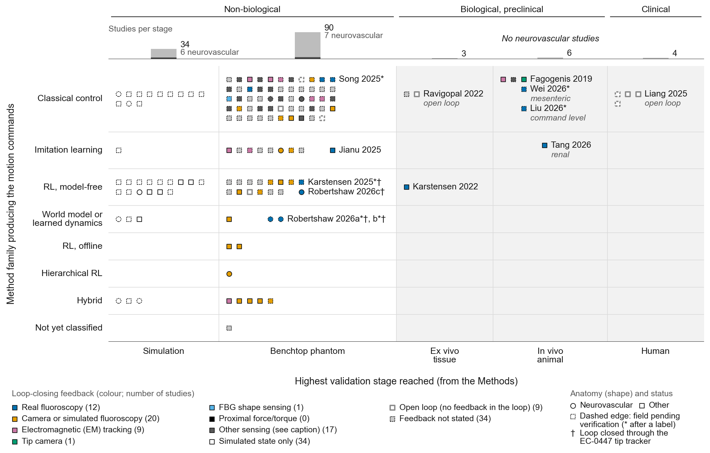

Fig. 2 | No autonomous neurovascular navigation study has gone beyond the benchtop phantom.
Closed loops on real fluoroscopy reached tissue in 4 studies, none neurovascular. Filter by stage, method family, feedback modality, anatomy, autonomy level and verification status, or select a study for its card.
The map is wide; scroll sideways to see the ex vivo, in vivo and human columns.
src/f02_evidence_map.py from the same data/F02_snapshot.csv and caption: PDF, SVG, PNG. This explorer packs markers in its own grid, so positions inside a cell differ from the print figure; the "All studies" view reproduces its counts (checked by src/check_f02_explorer.py). The explorer is supplementary material.
Show the static PNG

Fig. 2 | No autonomous neurovascular navigation study has gone beyond the benchtop phantom. Evidence map of 137 endovascular navigation studies whose evidence cards record a level of autonomy (LoA) of 2 or higher (42), LoA 1–2 (8) or LoA not yet assessed (87). Each marker is one study, placed by the highest validation stage it reached (columns) and by the method family that produces the motion commands (rows; the family that produces the commands, as in Table 3.1 and a10's family rulings). Stage was assigned from the experimental conditions in each paper's Methods, not from the authors' terminology. Marker colour shows the feedback that closes the loop at that stage, with the number of studies: real fluoroscopy (12); camera or simulated fluoroscopy (20); electromagnetic (EM) tracking (9); tip camera (1); fibre Bragg grating (FBG) shape sensing (1); proximal force/torque (0); other sensing, that is ultrasound, MRI, optical or magnetic localisation and robot-internal signals (17); simulated state only, hollow (34); open loop, hollow with a grey edge (9); and feedback not stated, light grey (34). Circles denote neurovascular studies and squares other anatomy. Bars above the map count studies per stage (dark grey, neurovascular; light grey, other): simulation 34 (6 neurovascular); benchtop phantom 90 (7 neurovascular); ex vivo 3 (0 neurovascular); in vivo 6 (0 neurovascular); human 4 (0 neurovascular). The shaded columns are the biological and clinical stages. Closed loops on real fluoroscopy reached tissue in 4 studies, none neurovascular: an ex vivo porcine liver (Karstensen 2022, EC-0001, 10.1007/s11548-022-02646-8), in vivo coronary arteries at command level (Liu 2026*, EC-0071*, 10.3390/bioengineering13080848), in vivo renal arteries under supervised LoA 2, 2/2 trials in 2 pigs (Tang 2026, EC-0025, 10.1109/TASE.2026.3737298; its 47/50 bench result was camera-closed and is not part of this marker) and magnetic steering in one rabbit superior mesenteric artery at LoA 1–2 (Wei 2026*, EC-0026*, 10.1109/TASE.2026.3678482). Neurovascular closed loops on real fluoroscopy are 3 benchtop studies (EC-0014, EC-4002*, EC-4003*); their tip coordinates come from a tracker whose accuracy was never measured (EC-0447, 10.1515/cdbme-2022-0023), marked † on the labels, as is EC-4004*. Robertshaw 2026a, b and c are EC-4002*, EC-4003* and EC-0014. All 4 human-stage studies ran open loop: automated aortic stent-graft steps (EC-0123, EC-0142) and CorPath technIQ movement records whose LoA is not assessed (EC-0553*, EC-0556*). EC-0026* is drawn as other anatomy because its in vivo arm was the rabbit superior mesenteric artery (errata a10-S #18), and EC-0006 as other anatomy because its route ran from the descending aorta to the left common carotid artery, not to a neurovascular target (errata a10-S #16). Dashed marker edges, and an asterisk after a label, mark the 100 studies with at least one field pending verification (102 dashed markers in total, including LoA not assessed or feedback not stated). For the 85 cards not yet verified by a10 (mostly abstract level), stage, method family, feedback modality and anatomy are all pending. For the 15 verified cards with pending fields, 1 concerns a plotted encoding (EC-0026*): EC-0002* (robot), EC-0017* (devices), EC-0026* (feedback_modality), EC-0054* (limitations_stated), EC-0067* (limitations_stated; sim2real_method; simulator), EC-0071* (devices; sim2real_method; simulator; results), EC-4001* (results.max_force_N), EC-4002* (feedback_modality plane count), EC-4003* (feedback_modality plane count), EC-4004* (feedback_modality plane count), EC-4007* (results.n_trials; training steps), EC-4008* (robot.actuation), EC-4012* (results.n_trials), EC-4014* (observation; results.n_trials), EC-4016* (results.n_trials). Not shown: 47 candidate cards whose stage is not stated, 11 at LoA 0–1, 2 shared-control studies (EC-0043*, EC-0072), 8 records to which autonomy does not apply, 9 cross-domain records, 1 non-vascular study run in an airway (tracheal) phantom (EC-0096, 10.1109/ISMR57123.2023.10130202) and 1 study placed outside the in vivo autonomy cell (EC-0082*, 10.1109/TBME.2020.3046513)‡. Each study appears once, at its highest stage; fluoroscopy plane count is not encoded. The map shows how far each method has been validated, not study quality. Data: figures/F02/data/F02_snapshot.csv (216 candidate cards from evidence/evidence_index.csv). ‡EC-0082*, a guide-wired helical microrobot claiming automatic guidance in vivo: rat open abdomen, 2/5 survived; C-arm used for observation only; in vivo loop sensor not stated (A0 ruling 4, DEC-061). --- *Change note, 2026-10-20 (correction round F, work/PHASE6_FULLTEXT_ROUND.md; a10 full-text reports P1 to P4).* Counts recomputed by src/make_f02_csv.py and src/f02_evidence_map.py from the rebuilt evidence/evidence_index.csv; none typed by hand. EC-0025 is verified: its in vivo marker is the real-fluoroscopy arm, 2/2 trials in 2 pigs, LoA 2 (supervised), imitation learning, no star; its 47/50 bench result is camera-closed and is not plotted as fluoroscopy. EC-0026 now records single-plane fluoroscopy in vivo at LoA 1–2 (star kept: the bench camera is inferred). EC-0082 moved outside the in vivo autonomy cell with a footnote (A0 ruling 4). EC-0121 enters as verified bench, classical, camera, LoA 2 (cardiac). EC-0096 is excluded as non-vascular (airway phantom; A0 ruling). EC-0031 is coded RL, not hierarchical RL (A0 ruling, following a10-P1). EC-0030 and EC-0064 gained a stage and are plotted; EC-0029 left the map (LoA 1). All 21 feedback strings new in the rebuilt index are mapped explicitly in data/F02_modality_lookup.csv; no camera, EM or simulated string maps to fluoroscopy. Stars rebuilt from the current cards (verified false or pending fields).